Before we give the complete syntax for an SDIF file, we give an
illustrative example. In order to exhibit as many constructs as
possible, we consider how we might encode the example in
Section 2.5. We urge the reader to study this section in
detail. As always, there are many possible ways of specifying a
particular problem; we give one in Figures 3.1 and 3.2,
pages  and
and  .
The horizontal and vertical lines are merely included to indicate the
extent of data fields. The actual widths of the fields
are given at the top of the figure, and the column numbers given at
its foot.
.
The horizontal and vertical lines are merely included to indicate the
extent of data fields. The actual widths of the fields
are given at the top of the figure, and the column numbers given at
its foot.
The SDIF file naturally divides into two parts. In the first part, lines 2 to 39 of the figure, we specify information regarding linear functions used in the example. In the second part, lines 40 to 93, we specify nonlinear information. The first part is merely an extension of the MPS input format; the second part is new.
The file must always start with a NAME card, on which a name (in this case EG3) for the example may be given (line 1), and must end with an ENDATA card (line 93). A comment is inserted at the end of line 1 as to the source of the example. The character $ identifies the remainder of the line as a comment; the comment is ignored when interpreting the input file.
We next specify names of parameters which will occur frequently in specifying the example (lines 2 to 5). In our case the integer and real parameters 1 and ONE are given along with N, a problem dimension -- here N is set to 100, but it would be trivial to change the example in 6 to allow variables 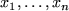 for any 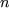. We make a comment to this effect on line 4; any card with the character * in column 1 is a comment card and its content is ignored when interpreting the input file.
We now name the problem variables and groups (in our example objective function and constraints) used. The groups may be specified before or after the variables. We choose here to name the groups first. The objective function will be known as OBJ (line 7); the character N in field 1 specifies that this is an objective function group. The inequality constraints (2.19) and (2.20) are named 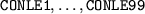 and 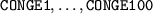 respectively. Rather than specify them individually, a do-loop is used to make an array definition. Thus the constraints are defined en masse on lines 9 to 11 with the do-loop index I running from the previously defined value 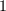 to the value NM1. The integer parameter, NM1, is defined on line 8 to be the sum of N and the value 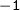 and in our case will be 99. The characters XL in field 1 of line 10 indicate that an array definition is being made (the 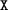) and that the groups are less-than-or-equal-to constraints (the L). The do-loop introduced on line 9 with the characters DO in field 1 is terminated on line 11 with the characters ND in its first field. In a similar way, the constraints 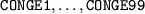 are defined all together on lines 12 to 14; that these constraints involve bounds on both sides is taken care of by considering them to be greater-than-or-equal-to constraints (XG) on line 13 and later specifying the additional upper bounds in the RANGES section (lines 26 to 29). Finally, the equality constraint (2.21) is to be called CONEQ (line 15); the character E in field 1 specifies that this is an equality constraint group.
Having named the groups, we next name the problem variables. At the same time, we include the coefficients of all the linear elements used. The variables are named 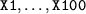 and Y; an array declaration is made for the former set on lines 17 to 19 and Y is defined on line 20. The character X in field 1 of line 18 indicates that an array definition is used. Only the objective function (2.18), inequality constraint (2.19) and equality constraint groups (2.21) contain linear elements. As well as introducing Y, line 20 also specifies that the linear element associated with group OBJ (field 3) involves variable Y, and that Y 's coefficient in the linear element is 1.0 (field 4). A do-loop is now used in lines 21 to 23 to show that the linear elements for constraints (2.19) also use the variable Y. It is assumed that unless a variable is explicitly identified with a linear element, the element is independent of that variable. Thus, although (2.21) uses a linear element, the element is constant and need not be specified in the VARIABLES section.
The only remaining part of the linear elements which must be specified is the constant term. Again, only nonzero constants need be given. For our example, only the equality constraint group (2.21) has a nonzero constant term and this data is specified on lines 24 and 25. The string C1 in field 2 of line 25 is the name given to a specific set of constants. In general, more than one set of constants may be specified in the SDIF file and the relevant one selected in a postprocessing stage. Here, of course, we only have one set.
As we have seen, the inequality constraint groups (2.20) are
bounded from above as well as from below. In the RANGES
section (lines 26 to 30) we specify these upper bounds (or range
constraints as they are sometimes known).
The numerical values
 are specified for each bound for the relevant groups
in an array
definition on line 28; the string R1 in field 2 is once
again a name
given to a specific set of range values as it is possible
to define more than one set in the RANGES section.
are specified for each bound for the relevant groups
in an array
definition on line 28; the string R1 in field 2 is once
again a name
given to a specific set of range values as it is possible
to define more than one set in the RANGES section.
We now turn to the simple bounds
(2.22) which are specified in
lines 30 to 36 of the example. All problem variables are assumed to
have lower bounds of zero and no upper bounds unless otherwise
specified. All but one of the variables for our example have lower
bounds of 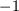. We thus change the default
value for the value of the lower bound on line 31 - the set of bounds
is named BND1. The character L
specifies that it is the lower bound
default that is to be changed.
The string 'DEFAULT'
in field 3 indicates that the default is being changed. The variable
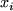 is given an upper bound
of  . We encode that in a do-loop on
lines 32 to 35 of the figure. The do-loop index I is an
integer. We change its current value to a real on line 33 and assign
that value as the upper bound
on line 34. The character Z in
field 1 of this line indicates that an array
definition is being made
and that the data is taken from a parameter in field 5 (as opposed to
a specified numerical value in field 4) and the character U
specifies that the upper bound
value is to be assigned. The variable
y is unbounded or, as it is often known, free.
This is specified on line 36, the string FR
in field 1 indicating that Y is free.
. We encode that in a do-loop on
lines 32 to 35 of the figure. The do-loop index I is an
integer. We change its current value to a real on line 33 and assign
that value as the upper bound
on line 34. The character Z in
field 1 of this line indicates that an array
definition is being made
and that the data is taken from a parameter in field 5 (as opposed to
a specified numerical value in field 4) and the character U
specifies that the upper bound
value is to be assigned. The variable
y is unbounded or, as it is often known, free.
This is specified on line 36, the string FR
in field 1 indicating that Y is free.
The final ``linear'' piece of information given is an estimate of the
solution to the problem (if known) or at least a set of values from
which to start a minimization algorithm. This information is given on
lines 37 to 39. For our problem, we choose the values
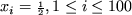 and  . Unless otherwise
specified, all starting values take a default of zero.
We change that
default on line 38 to
. Unless otherwise
specified, all starting values take a default of zero.
We change that
default on line 38 to
 -- the set of starting values are
named START1 -- and then specify the individual value for the
variable Y on line 39.
-- the set of starting values are
named START1 -- and then specify the individual value for the
variable Y on line 39.
We now specify the nonlinear information.
 Firstly, we recall that
there is a quadratic objective group,
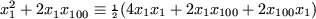. We need to specify the nonzero coefficients
of the terms 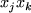, and in our cases these are
Firstly, we recall that
there is a quadratic objective group,
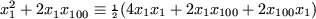. We need to specify the nonzero coefficients
of the terms 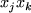, and in our cases these are
 and
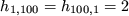.
The rule that we adopt is
that there is no need to supply both nonzeros
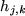 and 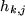 since they are the same, and
that one (whichever is unimportant) suffices. Thus
and
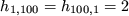.
The rule that we adopt is
that there is no need to supply both nonzeros
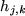 and 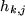 since they are the same, and
that one (whichever is unimportant) suffices. Thus  and we (arbitrarily) choose to give 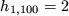.
In the QUADRATIC section on lines 39a to 39b, we indicate that
the quadratic objective has two terms involving
and we (arbitrarily) choose to give 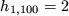.
In the QUADRATIC section on lines 39a to 39b, we indicate that
the quadratic objective has two terms involving
 ; the coefficient 4 is given for the
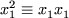 term, while that for
the 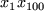 term is assigned the value 2.
; the coefficient 4 is given for the
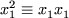 term, while that for
the 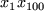 term is assigned the value 2.

Next, we saw in Section 2.5
that there are four element types
for the problem, being of the form
(i)
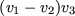, (ii) 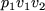, (iii)  and (iv)
and (iv)
 . In the ELEMENT TYPE
section on lines 40 to 48, we record details of these types. We name
the four types (i)-(iv) 3PROD, 2PROD, SINE and SQUARE
respectively. For 3PROD, we define the elemental variables
(lines 41 and 42) to be V1, V2 and V3 and the internal
variables (line 43) to be U1 and U2. Elemental variables
may be defined, two to a line, on lines for which field 1 is EV.
Internal variables,
on the other hand, are defined on lines with IV in field 1. Similar definitions are made for 2PROD (line
44), SINE (line 46) and SQUARE (line 47). The type 2PROD also makes use of a parameter 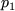. This is named P1
on line 45 for which field 1 reads EP.
. In the ELEMENT TYPE
section on lines 40 to 48, we record details of these types. We name
the four types (i)-(iv) 3PROD, 2PROD, SINE and SQUARE
respectively. For 3PROD, we define the elemental variables
(lines 41 and 42) to be V1, V2 and V3 and the internal
variables (line 43) to be U1 and U2. Elemental variables
may be defined, two to a line, on lines for which field 1 is EV.
Internal variables,
on the other hand, are defined on lines with IV in field 1. Similar definitions are made for 2PROD (line
44), SINE (line 46) and SQUARE (line 47). The type 2PROD also makes use of a parameter 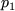. This is named P1
on line 45 for which field 1 reads EP.
Having specified the element types,
we next specify individual
nonlinear elements
in the ELEMENT USES
section. As we have seen, the objective function
group uses a single
nonlinear element of type
3PROD. We name this particular element
OBJ1. On line 50, the character T in field 1 indicates
that the OBJ1 is of type 3PROD. The assignment of problem
to elemental variables
is made on lines 51 to 53. Problem variables
X1 and X2 are assigned to elemental variables V1 and
V3; the assignment is indicated by the character V in
field 1. In order to assign  (or in general 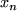) to
(or in general 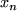) to  ,
we assign the array
entry X(N) to V2. Notice that as an
array element is being used, this must be specially flagged (ZV
in field 1) as otherwise the wrong variable (called X(N) rather
than X100, which is the expanded form of X(N)) would be
assigned. There are two nonlinear elements
for each inequality
constraint group
(2.19), each being of the same type 2PROD. We name these
elements
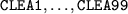 and
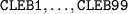. The assignments are made on lines 54 to 67 within a do-loop.
On lines 56 and 60 the elements are named
and their types assigned.
,
we assign the array
entry X(N) to V2. Notice that as an
array element is being used, this must be specially flagged (ZV
in field 1) as otherwise the wrong variable (called X(N) rather
than X100, which is the expanded form of X(N)) would be
assigned. There are two nonlinear elements
for each inequality
constraint group
(2.19), each being of the same type 2PROD. We name these
elements
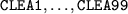 and
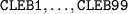. The assignments are made on lines 54 to 67 within a do-loop.
On lines 56 and 60 the elements are named
and their types assigned.
As array
assignments are being used, field 1 for both lines contains
the string XT.
The elemental variables
are then associated with
problem variables
on lines 57-58 and 61-62 respectively. Again array
assignments are used and field 1 contains the string ZV.
Notice that on line 58  is assigned the problem variable
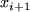, where the index IP1 is defined as the sum of the
index I and the integer value 1 on line 55. It remains to
assign values for the parameter
is assigned the problem variable
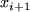, where the index IP1 is defined as the sum of the
index I and the integer value 1 on line 55. It remains to
assign values for the parameter  for each element.
This is
straightforward for the elements
for each element.
This is
straightforward for the elements
 as the
required value is always 1 and the assignment is made on line 59 on a
card
with first field XP.
The remaining elements have varying parameter
values 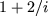.
This value is calculated on lines 63 to 65 and assigned on line 66.
Line 63 assigns REALI to have the floating point value of the
index I. This new value is then divided into the value 2 on
line 64 and the value assigned to ONE is added to the resulting
value on the final line. Thus the parameter
2OVAI+1 holds the
required value of
as the
required value is always 1 and the assignment is made on line 59 on a
card
with first field XP.
The remaining elements have varying parameter
values 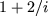.
This value is calculated on lines 63 to 65 and assigned on line 66.
Line 63 assigns REALI to have the floating point value of the
index I. This new value is then divided into the value 2 on
line 64 and the value assigned to ONE is added to the resulting
value on the final line. Thus the parameter
2OVAI+1 holds the
required value of  and the array
assignment is made on line 66.
On this line the string ZP indicates that an array
assignment is
being made, taking its value from the parameter 2OVAI+1 in field
4 (the Z) and that the elemental parameter
P1 in field 3
is to be assigned (the P). The definition of the nonlinear
elements for the remaining constraint
groups is straightforward. The inequality constraints
(2.20) each
use a single element, named
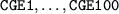, of type SINE and the appropriate array
assignments are made on lines 68 to
70. Finally, the equality constraint
(2.21) is named CEQ1
and typed SQUARE with appropriate elemental variable
assignments on lines 72 to 74.
and the array
assignment is made on line 66.
On this line the string ZP indicates that an array
assignment is
being made, taking its value from the parameter 2OVAI+1 in field
4 (the Z) and that the elemental parameter
P1 in field 3
is to be assigned (the P). The definition of the nonlinear
elements for the remaining constraint
groups is straightforward. The inequality constraints
(2.20) each
use a single element, named
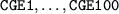, of type SINE and the appropriate array
assignments are made on lines 68 to
70. Finally, the equality constraint
(2.21) is named CEQ1
and typed SQUARE with appropriate elemental variable
assignments on lines 72 to 74.
We next need to specify the nontrivial group types.
This is done in
the GROUP TYPE
section on lines 75 to 77. We saw in
Section 2.5 that a single nontrivial group, 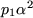, is required. On line 76, the name PSQUARE is given
for the type and the group type variable 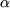 is named  The string GV
pin field 1 indicates that a type and its
variable are to be defined. On the following line field 1 is GP
and this is used to announce that the group type parameter
The string GV
pin field 1 indicates that a type and its
variable are to be defined. On the following line field 1 is GP
and this is used to announce that the group type parameter
 is named P1.
is named P1.
Finally, we need to allocate nonlinear elements
to groups
and specify
what type the resulting groups are to be. This takes place within the
GROUP USES
section which runs from line 78 to 90. The objective
function group is nontrivial and its type is announced on line 79. The
group uses the single nonlinear element
OBJ1 specified on line
80 and the group-type parameter
 is set to the value
is set to the value
 on the next line. The characters T, E and
P
in the first fields of these three cards
announce their
purposes. The inequality groups (2.19) each use two nonlinear
elements,
but the groups themselves are trivial
(and thus their types
do not have to be made explicit). The assignment of the elements to
each group is made in an array
definition on lines 82 to 84; line 83
is flagged as assigning elements to a group with the string XE
in field 1. The second set of inequality constraints
(2.20) use
the nontrivial group type PSQUARE with parameter value 1.
Each group uses a single nonlinear element
and the appropriate array
assignments are contained on lines 85 to 89. Lastly the trivial
equality constraint group (2.21) is assigned the nonlinear
element CEQ1 on line 90.
on the next line. The characters T, E and
P
in the first fields of these three cards
announce their
purposes. The inequality groups (2.19) each use two nonlinear
elements,
but the groups themselves are trivial
(and thus their types
do not have to be made explicit). The assignment of the elements to
each group is made in an array
definition on lines 82 to 84; line 83
is flagged as assigning elements to a group with the string XE
in field 1. The second set of inequality constraints
(2.20) use
the nontrivial group type PSQUARE with parameter value 1.
Each group uses a single nonlinear element
and the appropriate array
assignments are contained on lines 85 to 89. Lastly the trivial
equality constraint group (2.21) is assigned the nonlinear
element CEQ1 on line 90.
The definition of the problem is now complete. However, it often helps the intended minimization program if known lower and upper bounds on the possible values of the objective function can be given. For our example, the objective function (2.18) cannot be smaller than zero. This data is specified on lines 91 and 92. The string LO in field 1 of line 92 indicates that a lower bound is known for the value of (2.18). The string OBOUND in field 2 of this line is a name given to this known bound. The value of the lower bound now follows in field 4. No upper bound need be specified as the function is initially assumed to lie between plus and minus infinity.